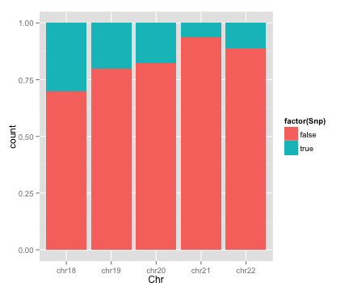
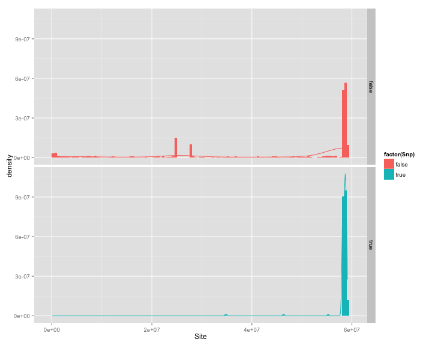

20150313 job
- Watch the video of MultiGeMS
- Check EM algorithm of R code
- Check EM algorithm of C++ code
- Select all suspicious sites from GiaB and Upenn datasets (unpooled)
- Find some region from true SNPs according to properties (such as coverage, quality, etc.)
- Find some special region according to properties
Check EM algorithm (R)
- Use all the default value from GeMS-3gen-submax.R
- Process data from file "samples"
- Run multiEM function
Code (Without paste of default values)
require("minqa")
require("Biostrings")
data <- read.table(file="samples", header=FALSE, sep="\t")
data <- cbind(data, data[,1])
data <- data[, 4:8]
data <- t(data)
source("em.R")
multiEM("C", data, c(1),1)
Check EM algorithm (C++)
- Modify code to add debug function
- Modify code to add test function
- Run without parameter
Create site file interest.txt
- Use upennmed.R (Comment pool part)
- Use gzip -d *.vcf.gz if necessary
- Use gzip -d *.out.gz if necessary
- Use cut -f 1-3 -d . multigemslist if necessary
- Use regions.rda
- Use intersect() setdiff()
Select suspicious sites
zgrep -f ~/interest.txt *.pile.gz > ~/sites.txt
sort -n -k 2 sites.txt > sites.sorted.txt
completeness check
cat sites.sorted.txt | cut -f 2 | uniq | wc -l
cat interest.txt | wc -l
cat sites.sorted.txt | cut -c 3-7 | sort | uniq | wc -l
Histgram
- The whole dataset
- Every Chromosome
GiaB dataset
library(ggplot2)
load("GiaB_dataset.rda")
p <- ggplot(data=GiaB_dataset, aes(x=Chr, fill=factor(Snp)))
p + geom_bar(position='stack')

GiaB dataset
library(ggplot2)
load("GiaB_dataset.rda")
p <- ggplot(data=GiaB_dataset, aes(x=Chr, fill=factor(Snp)))
p + geom_bar(position='fill')

GiaB dataset (Code)
library(ggplot2);
load("GiaB_dataset.rda")
p <- ggplot(data=GiaB_dataset[GiaB_dataset$Chr=="chr19", ], aes(Site))
p + geom_histogram(binwidth=500000, position='identity',
alpha=0.5, aes(y=..density.., fill=factor(Snp))) +
stat_density(geom='line', position = 'identity', aes(colour = factor(Snp))) +
facet_grid(Snp~.)
GiaB dataset (Chr18)

GiaB dataset (Chr19)

GiaB dataset (Chr20)

GiaB dataset (Chr21)

GiaB dataset (Chr22)

Upenn dataset
library(ggplot2)
load("upenn_dataset.rda")
p <- ggplot(data=upenn_dataset, aes(x=Chr, fill=factor(Snp)))
p + geom_bar(position='stack')

Upenn dataset
library(ggplot2)
load("upenn_dataset.rda")
p <- ggplot(data=upenn_dataset, aes(x=Chr, fill=factor(Snp)))
p + geom_bar(position='fill')

Upenn dataset (Code)
library(ggplot2);
load("upenn_dataset.rda")
p <- ggplot(data=upenn_dataset[upenn_dataset$Chr=="chr19", ], aes(Site))
p + geom_histogram(binwidth=500000, position='identity',
alpha=0.5, aes(y=..density.., fill=factor(Snp))) +
stat_density(geom='line', position = 'identity', aes(colour = factor(Snp))) +
facet_grid(Snp~.)
Upenn dataset (Chr19)

Upenn dataset (Chr20)

Upenn dataset (Chr21)
Upenn dataset (Chr22)

20150313 learning
- R basic manipulation
- slidify
- ggplot2
- googleVis
STUDYING
- Least Angle Regression
- Robust subspace clustering
- A Survey of Clustering Data Mining Techniques
- Sparse Recovery via Differential Inclusions
- ROP: Matrix Recovery via Rank-one Projections
- ParticleCall
Something about RStudio
- The default device of RStudio maybe has some problem when plot
- Try to use
options(device="X11") or other devices
- Library Cairo is required if use alpha parameter which make the graphic pretty
- If R can not find Cairo, do not use alpha parameter